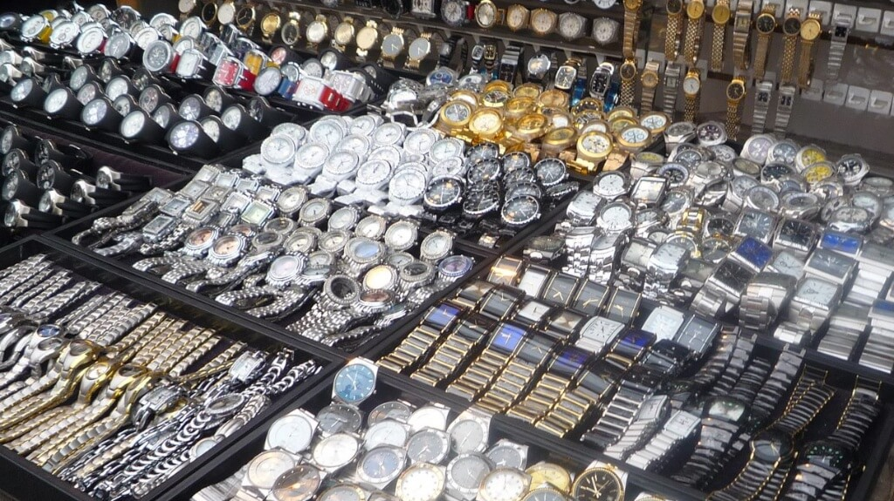

Việc sưu tầm và sở hữu những chiếc đồng hồ hàng hiệu xa xỉ luôn là một niềm
đam mê của nhiều quý ông hiện đại ngày nay.
Khi quyết định sở hữu một món đồ đắt giá, dù là đồng hồ hay bất kì thứ gì khác, việc đưa ra những lý do
thích đáng để
quyết định đầu tư là một việc vô cùng quan trọng.
Và thậm chí là còn quan trọng hơn ở tại Việt Nam khi mà giá của những chiếc đồng hồ này sau khi bị đánh
thuế, đã cao hơn
rất nhiều so với giá bán nội địa. Không những thế, là hiện tượng hàng giả và hàng nhái tràn lan thị trường
và ngày càng
tinh vi hơn.
“Vì người ta thường có tâm lý là tiền nào của đó, nên giá cũng những chiếc đồng hồ giả cũng ngày càng tăng
cao”, Timothy
Gordon, một chuyên gia tư vấn, thẩm định giá thị trường trực tuyến Lofty, chia sẻ với tờ Business Insider.
“Như bất kỳ món đồ nào khác, nếu nó được ưa chuộng và bán được thì hàng nhái và hàng kém chất lượng chắc
chắc sẽ theo
sau”, Timothy nói thêm.
Sau đây là những bí kíp để phân biệt đồng hồ hàng hiệu thật và giả theo lời chia sẻ chân thành của Timothy
Gordon:
1. Nghiên cứu kỹ và tìm hiểu về hãng và model mà bạn muốn mua
“Để nhận biết được đâu là một chiếc đồng hồ hàng hiệu giả, trước hết bạn phải biết hàng thật trông như thế
nào. Nó trông
ra sao, có những chi tiết nào, cân nặng bao nhiêu, và nó phát ra những loại âm thanh nào”, Timothy chia
sẻ.
Theo đó, bạn có thể tìm hiểu được những thông tin cơ bản nhất về những model đồng hồ mà các hãng công bố
trên website
chính quy. Hoặc tới những hội nghị đồng hồ như SIHH và BaselWorld, nơi bạn có thể dễ dàng gặp gỡ và chia
sẻ kiến thức
cùng với những tay sành đồng hồ thứ thiệt.
Ngoài ra, là những bộ hồ sơ phân tích chi tiết từ những nhà bán đấu giá danh tiếng.
“Khi bạn nhìn vào những bản hồ sơ phân tích và đánh giá chi tiết của những nhà bán đấu giá danh tiếng như
Christie,
Sotheby, hay Bonhams, những chuyên gia này thực sự thấu hiểu đồng hồ cho đến những chi tiết nhỏ nhất và đã
có kinh
nghiệm trong nghề từ rất lâu. Do đó, bạn hoàn toàn có thể tin tưởng vào nhận định của họ, cũng như mức giá
cả của những
mẫu đồng hồ này”,Timothy chia sẻ.
Theo đó, Timothy khuyên người mua nên so sánh những yếu tố sau:
Kiểm tra giá cả: Hàng giả bao giờ cũng có giá rẻ hơn rất nhiều hàng thật. “Hãy nghiên cứu giá thật
kỹ trước khi mua” là
lời khuyên của Timothy.
Kiểm tra bộ máy trong: Cho dù đồng hồ giả có nhìn đẹp đến đâu, thì nó cũng không bao giờ được trang
bị bộ máy xịn như
hàng thật. Theo đó, Timothy khuyên các bạn nên gặp một chuyên gia và nhờ người ấy kiểm tra bộ máy.
Kiểm tra cân nặng: Đồng hồ chính hãng thường có trọng lượng nặng hơn so với đồng hồ nhái vì được
làm bằng các vật liệu
cao cấp có độ bền cao.
Kiểm tra mặt số: Dòng chữ ví dụ như “SWISS MADE “ thường được in rất nhỏ dưới số 6 nhìn phải có độ
cao bằng nhau, nét in
phải sắc xảo, không bị nhoè, dòng chữ phải được bố trí cân xứng với số 6. Mặt đồng hồ phải hoàn hảo, không
gợn, nhìn độ
men tráng mặt phải đồng đều, có độ dày giống nhau. Các con số in trên đồng hộ cũng phải sắc xảo.
Kiểm tra kim đồng hồ: Các kim đồng hồ phải được làm cân đối, với những kim nhọn thì độ vát hai bên
phải là một tam giác
cân, sống gấp khúc giữa kim phải đi từ đỉnh trên xuống dưới. Nói chung kim đồng hồ chính hãng là một tuyệt
tác rất tinh
tế của sự đối xứng, còn hàng nhái thường có tì vết, lệch lạc không cân đối. Chỉ cần để ý kỹ là phát hiện
ra.
Kèm theo việc kiểm tra âm thanh:
Các hãng đồng hồ danh tiếng đã mất hàng trăm năm để nghiên cứu và chế tác ra bộ máy của đồng hồ và họ đã
tạo nên linh
hồn của đồng hồ bằng bộ kim chỉ giờ, trong đó kim giây bao giờ cũng di chuyển rất mềm mại và di chuyển
liên tục, liền
mạch không có khoảng ngừng lại. Đây chính là điều đặc biệt nhất mà ở đồng hồ giả không có. Còn với đồng hồ
giả, kim giây
khi di chuyển thường giật không liền mạch, tiếng kêu tích tắc, tích tắc phát ra to như đồng hồ treo tường
nhà.
Kiểm tra dấu hiệu khắc, dập: Các chỗ khắc, dập ngoài vỏ phải thật sắc sảo, đồng đều, không bị nhoè.
Hàng thật thường dập
biểu tượng ở núm và khắc hoặc dập biểu tượng ở khóa. Ở dưới đáy đồng hồ thường khắc số, các con số, chữ
này phải có độ
nông sâu đồng đều và nhìn phải thấy cân đối (dấu hiệu này phải xem thường xuyên mới có thể phát hiện ra
được vì hàng
nhái cấp 2 cũng làm tương đối giống hàng thật).
